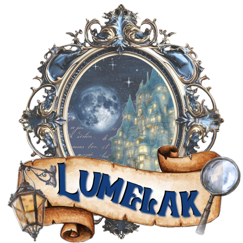
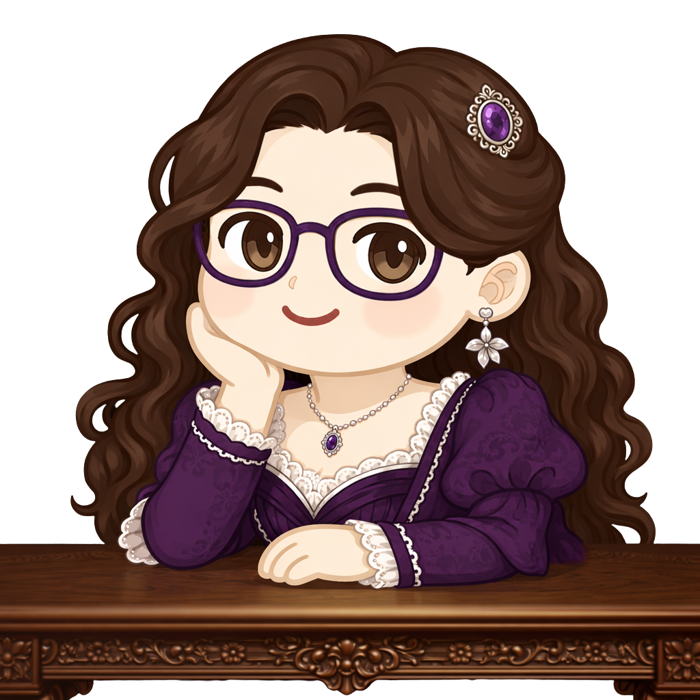
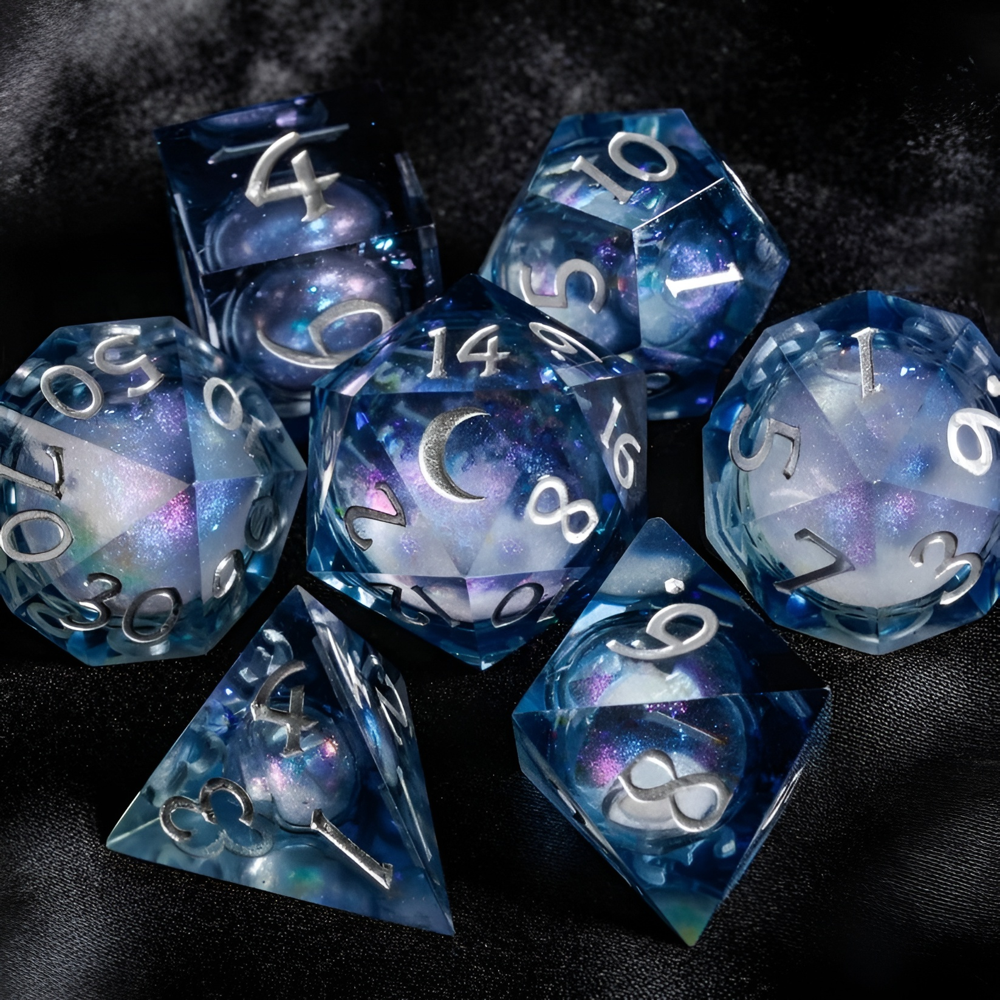
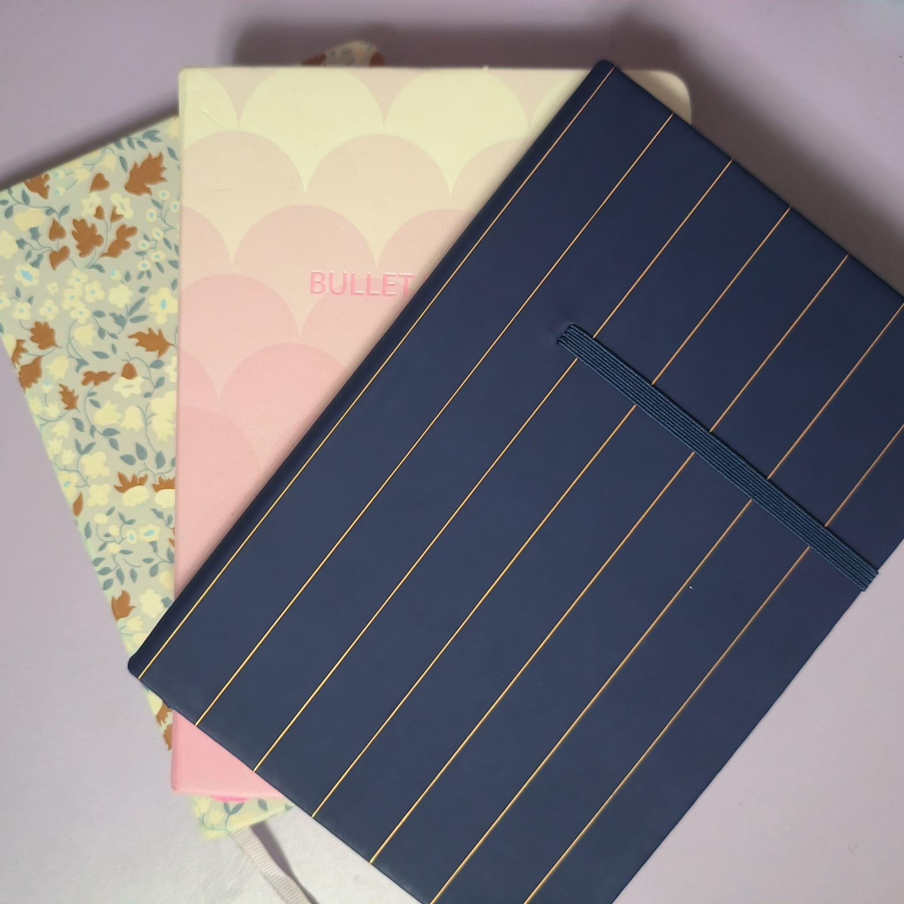

¿Qué es Lumelak?
Bienvenido a Lumelak, un universo ficticio lleno de aventuras y descubrimientos.
Lumelak como entidad ofrece dos significados:
- El nombre de la campaña, la cual se desarrolla verdaderamente en una ciudad que responde al nombre de Selkaron, pero que sigue haciendo referencia de alguna u otra forma, a aquello que une a la mesa, su centro de gravedad, por decirlo de alguna manera.
- El nombre del despacho de detectives donde, como podrás deducir, trabajan codo con codo nuestros protagonistas a escondidas de sus respectivas familias. Sí, tal y como deduces, su aburrimiento por el estilo de vida de la nobleza les ha llevado a investigar, tal vez, la cara más oscura de su ciudad...
Como bien podrás deducir, Lumelak es mucho más que solo aquello que he mencionado, pero para descubrir qué secretos esconde, te toca observar o, en el caso de algunos —afortunados o desdichados, dependiendo de a quién le preguntes—, vivir en carne propia los acontecimientos que le esperan a esta ciudad o, mejor dicho, al despacho de detectives.


¿Cómo nació?
Podría contarte la más dramática de las historias, pero eso sería contar, en cierta medida, una mentira.
Aquellos más allegados a mí me conocen por ser una persona muy creativa y apasionada por el mundo de la narrativa. Disfrutando en especial de construir nuevos mundos e historias. Así que sí, la imaginación no es algo que escasee en mí. Todo lo contrario, normalmente me sobran ideas y ello, como consecuencia, terminará provocando que mis amigos roleen conmigo hasta los ciento veinticinco años :D
Esto que acabo de contarte probablemente despierte la siguiente pregunta: ¿tú terminas algo?
Pues, aunque pueda sorprenderte, la pregunta es que sí, el problema es que yo no sé hacer nada pequeño y, por tanto, el proceso es largo, lento, pero todo termina hecho, ¿o acaso pensabas lo contrario?
¿Qué encontrarás aquí?
Pues esta página tiene como propósito que encuentres todo aquello indispensable para entender Lumelak, ya no solo como mundo, sino también a sus personajes y por qué actuan de cierta manera.
Aquí entre nosotros: lo más probable es que la gran mayoría de los/as másters desperdigados por el mundo usen npc's del estilo: te encuentras sentado en la barra junto a tí, a un hombre de mediana edad que te pregunta: "Oye, ¿puedes hacerme un favor?"
Si te soy sincera, odio que los personajes secundarios sean tan poco desarrollados. ¿Quién dice que la historia solo la cuentan los protas, que todo gira a su alrededor? Creo que, en parte, la magia del rol también se encuentra en que de un día para otro, pregunten por un personaje del que llevan pasando cinco partidas y yo les diga: qué bien que preguntas, pues mira, resulta que ha hecho una bomba nuclear y vais contrarreloj para desactivarla...
Es una manera eficaz a la par que siempre inquietante de tener a los jugadores en vela, puesto que nunca serán capaces de saber con certeza qué hace cada personaje secundario por mucho que lo intenten. Y eso, personita que lees esto, le da vida al mundo c:

¿Quieres saber más?
Entonces paséate por esta página todo lo que quieras, te digo que encontrarás información de todo tipo: lo esperado y, al mismo tiempo, información que te dejara pensando durante minutos —o tal vez horas—, qué narices se me pasa por la cabeza y como me planto siquiera el llevarlo a la realidad.
Mas no temas, todo tiene su explicación, aunque tal vez esta tarde en llegar, después de todo, no tendría nada de divertido daros todo en bandeja de plata desde el principio, ¿no?
¿Quién sabe? Tal vez, sin que te des cuenta, tengas más información ante tus ojos de lo que podrías imaginar, pero para eso, necesitas explorar y descubrir este nuevo mundo.
Por último, pero no menos importante, si crees que hay algo más que se me pasa por alto y que podría estar presente en esta página web, no dudes en escribirme a mi correo electrónico —al cual tienes enlace directo más abajo—, o contactándome por privado si es que posees mi número o cuenta de discord.
Y... para aquellos que dudan un poco más antes de actuar. Si crees que como este no es tu mundo, no tienes derecho a decirme qué debería contar y qué no, recuerda que no pierdes nada ofreciéndome una recomendaión. No muerdo, aunque a veces parezca lo contrario c:
¿Puedo participar en alguna de tus campañas o one-shots?
Pues mira, este no es el apartado en el que te doy un "sí" directo, porque si soy sincera, me cuesta mucho aceptar a nuevos integrantes en mi mesa, pero no quiero cerrarme puertas, tal vez alguien ahí fuera sienta curiosidad por conocer más sobre lo que ofrezco.
Es ahora cuando vuelvo a repetirme: ¿quieres postularte para ser parte de mi mesa? Entonces, ahora si que sí, escríbeme por correo electrónico.
Ahora me pongo un poquitín más seria, porque si alguien es parte de mi mesa, exijo ciertas condiciones:
- Ser una persona respetuosa, tanto conmigo como con el resto de integrantes de la mesa.
- Ser una persona comprometida, es decir, que se comprometa a asistir a las partidas y a avisar con antelación si no va a poder asistir.
- Ser una persona "estudiosa", las tramas elaboradas no se resuelven sentándote en una silla el día de la partida y luego olvidándote de todo hasta la próxima sesión. Si eres parte de esto, lo menos que puedes hacer para respetar mi trabajo, es dedicar tiempo a prepararte y participar activamente.
Si, por el motivo que sea, cualquiera de esas tres cosas te parece demasiado, entonces ten claro que mi respuesta a tu propuesta de unión será un rotundo "no". Si yo me involucro todo cuanto puedo, espero lo mismo del resto de participantes. Una historia no la monto solo yo, la construimos juntos.
